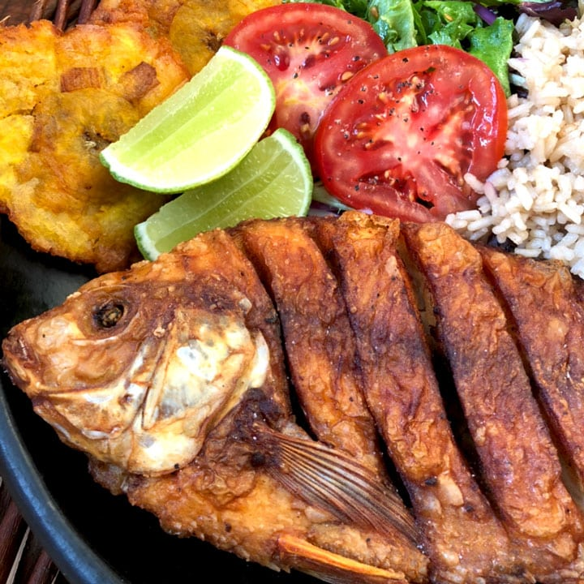

Mojarra frita

Descripción
La mojarra frita es exquisita, bien dorada y muy crocante! Un plato tradicional de la costa con mucho sabor y color! Para prepararla solo hay que seguir el paso a paso!.
Ingredientes
- 10 dientes de ajo
- 1/2 cucharadita de pimienta negra molida
- aceite suficiente para freír
- 1/2 cucharadita de comino
- 3 Mojarras
- 1/2 cucharadita de sal
- 2 tazas de harina de trigo
- 1 cucharadita de aceite de oliva
- 1 zumo de limón
Preparación
-
Las mojarras deben estar limpias y sin escamas.
-
Llevamos al mortero los ajo, la sal, la pimienta y el comino.
-
Maceramos los ingrediente en el mortero. Cuando ya se forma una especie de pasta, incorporamos el jugo de limón y el aceite y mezclamos bien.
-
Con un cuchillo les hacemos de 4 a 5 cortes a cada pescado por los dos lados.
-
Se adoban por dentro de cada corte y adentro del pescado. Por la parte de afuera solo un poco y retirar el exceso pues el ajo en el que queda en la piel se quema y toma un color oscuro.
-
Espolvorear la harina de trigo por cada lado incluyendo las aletas y la cola. Retirar el exceso sacudiéndolas un poco.
-
Es importante que el sartén tenga el tamaño del pescado para que se fría uniformemente. Depende del sartén podemos freír las tres de una sola vez o de a una en una. Suficiente aceite vegetal a temperatura media alta.
-
Dejar cocinar de seis a siete minutos por cada lado, dependiendo del tamaño hasta que estén bien doradas y crocantes.
-
Escurrir bien y servir la Mojarra. La puedes acompañada de arroz con coco, ensalada, patacones y cascos de limón.